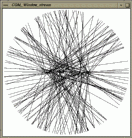

#include < CGAL/Segment_generator_2.h>
| CGAL_Segment_generator<S,P1,P2> g ( P1& p1, P2& p2); | |
|
is an input iterator creating segments of type
S from two input points, one chosen from p1, the
other chosen from p2. p1 and p2 are allowed be
be same point
generator. Precondition: must provide a constructor with two arguments, such that the value type of P1 and the value type of P2 can be used to construct a segment.
| |
/* Segment_generator_prog1.C */
/* ------------------------------------------ */
/* CGAL example program for the generic segment generator. */
#include <CGAL/basic.h>
#include <assert.h>
#include <vector.h>
#include <algo.h>
#include <CGAL/Cartesian.h>
#include <CGAL/Point_2.h>
#include <CGAL/Segment_2.h>
#include <CGAL/point_generators_2.h>
#include <CGAL/Segment_generator.h>
#include <CGAL/copy_n.h>
#include <CGAL/IO/Window_stream.h> /* only for visualization used */
typedef CGAL_Cartesian<double> R;
typedef CGAL_Point_2<R> Point;
typedef CGAL_Segment_2<R> Segment;
int main()
{
/* Create test segment set. Prepare a vector for 200 segments. */
vector<Segment> segs;
segs.reserve(200);
/* Prepare point generator for the horizontal segment, length 200. */
typedef CGAL_Random_points_on_segment_2<Point> P1;
P1 p1( Point(-100,0), Point(100,0));
/* Prepare point generator for random points on circle, radius 250. */
typedef CGAL_Random_points_on_circle_2<Point> P2;
P2 p2( 250);
/* Create 200 segments. */
CGAL_Segment_generator<Segment, P1, P2> g( p1, p2);
CGAL_copy_n( g, 200, back_inserter( segs));
/* Visualize segments. Can be omitted, see example programs */
/* in the CGAL source code distribution. */
CGAL_Window_stream W(512, 512);
W.init(-256.0, 255.0, -256.0);
W << CGAL_BLACK;
for( vector<Segment>::iterator i = segs.begin(); i != segs.end(); i++)
W << *i;
/* Wait for program termination. */
char c;
cout << " Type any character to continue: " << endl;
cin >> c;
cout << " done" << endl;
return 0;
}
| Figure: Output of example program for the generic segment generator. |  |
The second example uses precomputed point vectors to generate a regular
structure of 100 segments, see
Figure  for the example output.
for the example output.
/* Segment_generator_prog2.C */
/* -------------------------------------- */
/* CGAL example program for the generic segment generator */
/* using precomputed point locations. */
#include <CGAL/basic.h>
#include <assert.h>
#include <vector.h>
#include <algo.h>
#include <CGAL/Cartesian.h>
#include <CGAL/Point_2.h>
#include <CGAL/Segment_2.h>
#include <CGAL/point_generators_2.h>
#include <CGAL/Segment_generator.h>
#include <CGAL/copy_n.h>
#include <CGAL/IO/Window_stream.h> /* only for visualization used */
typedef CGAL_Cartesian<double> R;
typedef CGAL_Point_2<R> Point;
typedef CGAL_Segment_2<R> Segment;
int main()
{
/* Prepare two point vectors for the precomputed points. */
vector<Point> p1, p2;
p1.reserve(100);
p2.reserve(100);
/* Create points for a horizontal like fan. */
CGAL_points_on_segment_2( Point(-250, -50), Point(-250, 50),
50, back_inserter( p1));
CGAL_points_on_segment_2( Point( 250,-250), Point( 250,250),
50, back_inserter( p2));
/* Create points for a vertical like fan. */
CGAL_points_on_segment_2( Point( -50,-250), Point( 50,-250),
50, back_inserter( p1));
CGAL_points_on_segment_2( Point(-250, 250), Point( 250, 250),
50, back_inserter( p2));
/* Create test segment set. Prepare a vector for 100 segments. */
vector<Segment> segs;
segs.reserve(100);
/* Create both fans at once from the precomputed points. */
typedef vector<Point>::iterator I;
I i1 = p1.begin();
I i2 = p2.begin();
CGAL_Segment_generator<Segment,I,I> g( i1, i2);
CGAL_copy_n( g, 100, back_inserter( segs));
/* Visualize segments. Can be omitted, see example programs */
/* in the CGAL source code distribution. */
CGAL_Window_stream W(512, 512);
W.init(-256.0, 255.0, -256.0);
W << CGAL_BLACK;
for( vector<Segment>::iterator i = segs.begin(); i != segs.end(); i++)
W << *i;
/* Wait for program termination. */
char c;
cout << " Type any character to continue: " << endl;
cin >> c;
cout << " done" << endl;
return 0;
}
| Figure: Output of example program for the generic segment generator using precomputed point locations. |

|
{kind=link}